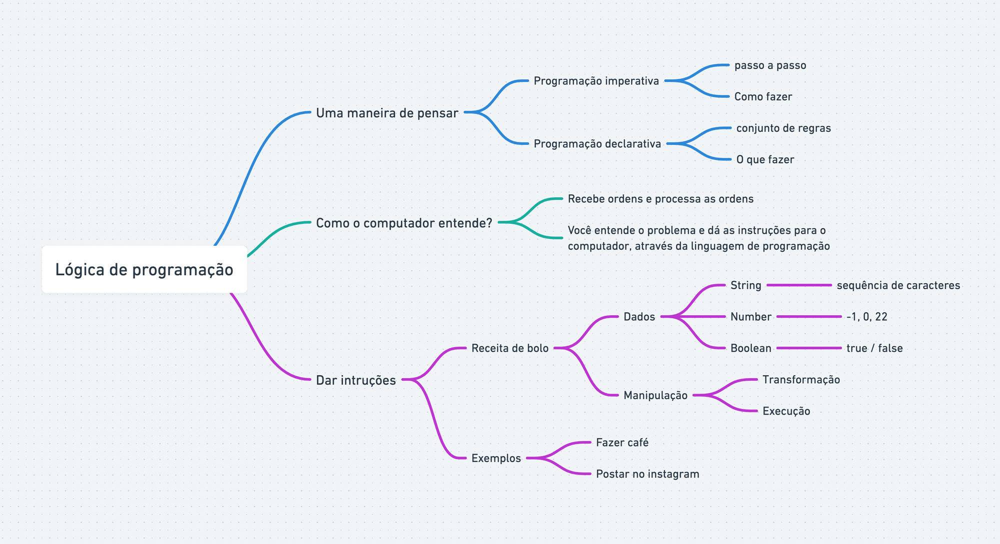
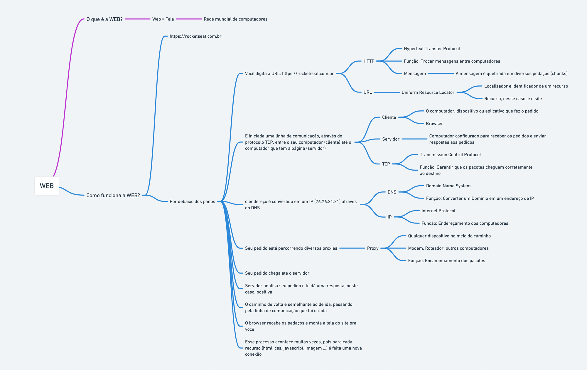
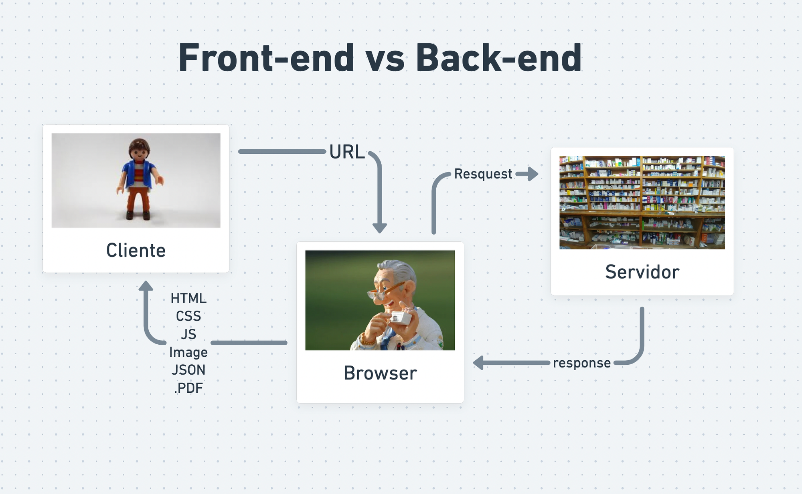
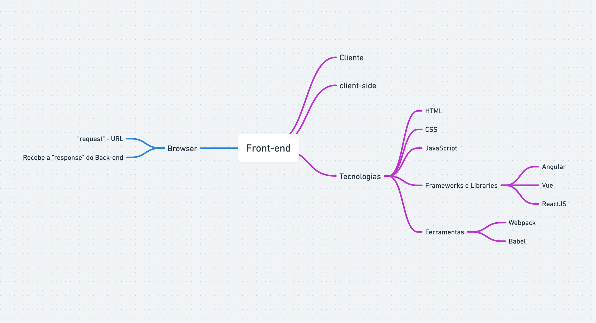
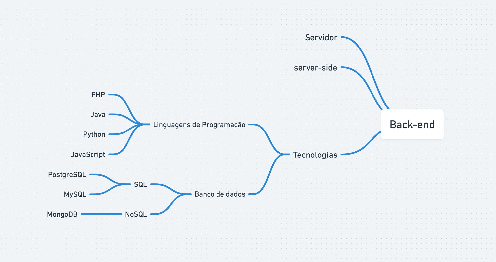

Programação é o ato de programar, capturar e tratar dados em um fluxo de eventos numa ordem lógica gerando tarefas para obter um resultado.
A programação depende de alguns fatores para ter um resultado em si, são eles:
Para encontrar soluções e resolver problemas do mundo real.
Conjunto de instruções lógicas.
Programação imperativa:
Dar ordens - Seguir passos e sequências - se preocupa com os detalhes.
Programação declarativa:
Declaração - Conjunto de regras definidas - nem tanto aprofundadoa
Lógica de programação é uma maneira de pensar seguindo uma sequência lógica de instruções, seja para construir um programa ou até fazer uma tarefa simples.
Programação imperativa: Dar ordens - Seguir passos e sequências se preocupa com os detalhes.
Programação declarativa:Declaração - Conjunto de regras definidos nem tanto aprofundado.
O computador não tem capacidade intelectual, ele recebe ordens (instruções) através de linhas de comando (linguagem de programação).
Seguindo uma sequência lógica contendo dados e manipulando o programa, sistema, site.
Web: Teia - Rede mundial de computadores.
A internet é uma rede global de computadores interconectados que usam o protocolo TCP/IP para compartilhar informações.
A comunicação na internet é possível graças ao protocolo TCP/IP, que é um conjunto de regras e procedimentos que permitem que os computadores se comuniquem uns com os outros.
Quando um usuário envia uma solicitação de informação, essa solicitação é dividida em pacotes de dados e enviada através da internet para o servidor apropriado. O servidor, por sua vez, envia uma resposta, também dividida em pacotes de dados, de volta ao usuário.
O TCP (Transmission Control Protocol) é responsável por garantir que os dados sejam transmitidos de forma precisa e confiável entre os computadores. Ele divide os dados em pacotes e os envia através da internet, garantindo que todos os pacotes cheguem ao destino correto e na ordem correta. Caso haja algum problema com a transmissão, o TCP tentará reenviar os pacotes até que eles cheguem ao destino correto.
O IP (Internet Protocol) é responsável por garantir que os pacotes de dados cheguem ao destino correto. Ele atribui um endereço IP único a cada dispositivo conectado à internet e usa esse endereço para encaminhar os pacotes de dados para o destino correto.
Quando você digita um endereço no seu navegador ex: https://rocketseat.com.br, esse endereço navega até o servidor de DNS (Domain Name System) e esse endereço digitado é convertido para um IP (Internet Protocol). O client (browser) manda uma requisição HTTP (Hypertext Transfer Protocol) para o servidor pedindo uma cópia do site. Todos esses são fornecidos através do protocolo TCP (Transmission Control Protocol). Com todo esse trajeto, você tem uma cópia do site completo em seu navegador.
Além do TCP e do IP, existem outros protocolos que fazem parte do conjunto TCP/IP. Por exemplo, o protocolo DNS (Domain Name System) é responsável por traduzir os endereços de nomes de domínio, como www.example.com, para endereços IP, permitindo que os usuários acessem sites com nomes fáceis de lembrar. O protocolo HTTP (Hypertext Transfer Protocol) é usado para transferir dados na World Wide Web.
Em resumo, o protocolo TCP/IP é um conjunto de regras e procedimentos que permitem a comunicação precisa e confiável entre computadores na internet, garantindo que os dados cheguem ao destino correto e na ordem correta. Ele é composto por vários protocolos, como o TCP, o IP, o DNS e o HTTP, que trabalham juntos para garantir que a comunicação entre dispositivos seja eficiente.
É a parte visual do nosso site, onde conseguimos ter uma certa interação. Programadores front-end utilizam as tecnologias (HTML, CSS, JavaScript) algumas bibliotecas e frameworks como ReactJS, Angular, Vue e ferramentas (Webpack e Babel)
Programadores back-end já trabalham mais do lado do servidor, onde está a regra de negócio. Normalmente é utilizada tecnologias como: NodeJS, PHP, Java, Python e banco de dados (mySQL, PostgreSQL, MongoDB).
  Troca de dados (arquivos)
Cliente faz o pedido e Servidor escuta e responde ao pedido
Cliente é o front-end, servidor é o back-end